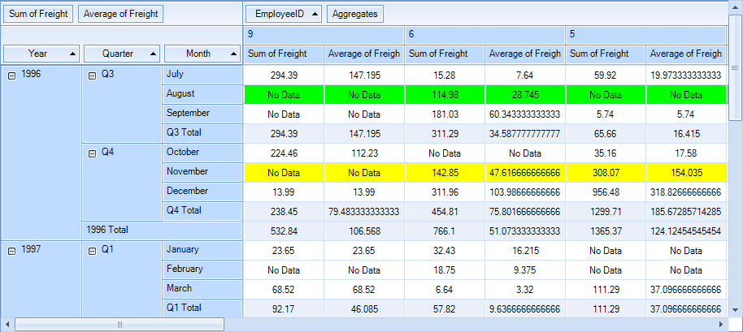
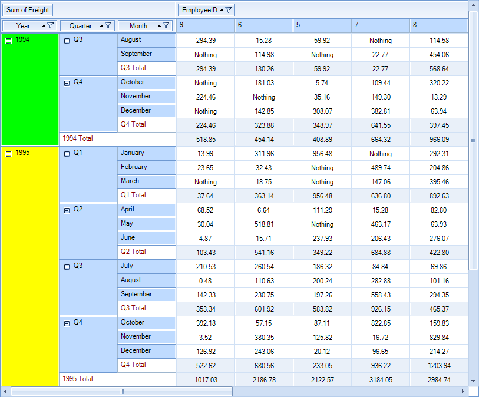

Formatting appearance
This article shows how you can change the appearance of specific cells.
CellFormatting
Using the CellFormatting event you can also set various properties of the PivotGridCellElement to modify its appearance. The following example
colors the cells in August in Lime color and those in November in Yellow color:
__[C#] __
void radPivotGrid1_CellFormatting(object sender, PivotCellEventArgs e)
{
if (e.CellElement.Row.Name == "August" && !e.CellElement.IsInGrandTotalColumn)
{
e.CellElement.BackColor = Color.Lime;
e.CellElement.GradientStyle = Telerik.WinControls.GradientStyles.Solid;
}
else if (e.CellElement.Row.Name == "November" && !e.CellElement.IsInGrandTotalColumn)
{
e.CellElement.BackColor = Color.Yellow;
e.CellElement.GradientStyle = Telerik.WinControls.GradientStyles.Solid;
}
else
{
e.CellElement.ResetValue(LightVisualElement.BackColorProperty, Telerik.WinControls.ValueResetFlags.Local);
e.CellElement.ResetValue(LightVisualElement.GradientStyleProperty, Telerik.WinControls.ValueResetFlags.Local);
}
}
__[VB.NET] __
Private Sub radPivotGrid1_CellFormatting(sender As Object, e As PivotCellEventArgs)
If e.CellElement.Row.Name = "August" AndAlso Not e.CellElement.IsInGrandTotalColumn Then
e.CellElement.BackColor = Color.Lime
e.CellElement.GradientStyle = Telerik.WinControls.GradientStyles.Solid
ElseIf e.CellElement.Row.Name = "November" AndAlso Not e.CellElement.IsInGrandTotalColumn Then
e.CellElement.BackColor = Color.Yellow
e.CellElement.GradientStyle = Telerik.WinControls.GradientStyles.Solid
Else
e.CellElement.ResetValue(LightVisualElement.BackColorProperty, Telerik.WinControls.ValueResetFlags.Local)
e.CellElement.ResetValue(LightVisualElement.GradientStyleProperty, Telerik.WinControls.ValueResetFlags.Local)
End If
End Sub

GroupElementFormatting
The GroupElementFormatting event can be used for styling the group cells:
__[C#] __
void PivotGridElement_GroupElementFormatting(object sender, PivotGroupElementEventArgs e)
{
if (e.GroupElement.Data.Name == "1994")
{
e.GroupElement.BackColor = Color.Lime;
}
else if (e.GroupElement.Data.Name == "1995")
{
e.GroupElement.BackColor = Color.Yellow;
}
else if (e.GroupElement.Data.Name.Contains("Total"))
{
e.GroupElement.ForeColor = Color.DarkRed;
e.GroupElement.BackColor = Color.White;
}
else
{
e.GroupElement.ResetValue(LightVisualElement.ForeColorProperty, ValueResetFlags.Local);
e.GroupElement.ResetValue(LightVisualElement.BackColorProperty, ValueResetFlags.Local);
}
}
__[VB.NET] __
Private Sub PivotGridElement_GroupElementFormatting(ByVal sender As Object, ByVal e As PivotGroupElementEventArgs)
If e.GroupElement.Data.Name = "1994" Then
e.GroupElement.BackColor = Color.Lime
ElseIf e.GroupElement.Data.Name = "1995" Then
e.GroupElement.BackColor = Color.Yellow
ElseIf e.GroupElement.Data.Name.Contains("Total") Then
e.GroupElement.ForeColor = Color.DarkRed
e.GroupElement.BackColor = Color.White
Else
e.GroupElement.ResetValue(LightVisualElement.ForeColorProperty, ValueResetFlags.Local)
e.GroupElement.ResetValue(LightVisualElement.BackColorProperty, ValueResetFlags.Local)
End If
End Sub
'#End Region
End Class

ErrorString and EmpltyValueString
Using the ErrorString and EmpltyValueString properties of RadPivotGrid,
you can set the strings that will appears correspondingly if an error occurs during the calculation of a cell value or if
there is no data for a given cell. An error can occur for example if you try to sum a text column.
__[C#] __
this.radPivotGrid1.ErrorString = "Error";
this.radPivotGrid1.EmptyValueString = "No Data";
__[VB.NET] __
Me.RadPivotGrid1.ErrorString = "Error"
Me.RadPivotGrid1.EmptyValueString = "No Data"